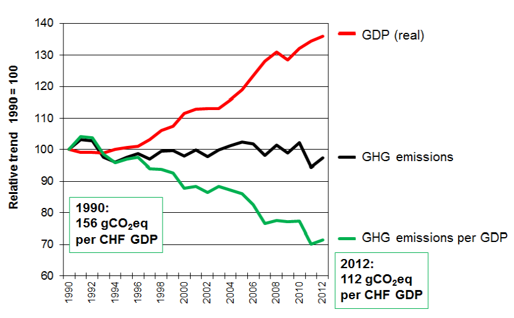

Figure 1. Switzerland’s greenhouse gas emissions by sectors in 2012.
Switzerland is pleased to communicate its intended nationally determined contribution (INDC) and clarifying information as per decisions 1/CP.19 and 1/CP.20.
Switzerland’s INDC
Switzerland commits to reduce its greenhouse gas emissions by 50 percent by 2030 compared to 1990 levels, corresponding to an average reduction of greenhouse gas emissions by 35 percent over the period 2021-2030. By 2025, a reduction of greenhouse gases by 35 percent compared to 1990 levels is anticipated. Carbon credits from international mechanisms will partly be used. The INDC is subject to approval by Parliament. The methodological approaches underlying the Swiss INDC are included in this communication.
Base year: 1990
Emissions in base year: 53.3 Mt per year (provisional, will be defined through the inventory submissions). Base year emissions from non-forest land (cropland, grassland, wetlands, settlements, other land) will be included, as necessary, after completion of a current study on these emissions [1] .
Emissions/removals from forest land are not included in the base year, since only the net change in emissions is accounted for this sector.
Time frame of the commitment is until end 2030.
This quantified commitment by 2030 is translated into an average commitment over the period from beginning 2021 to end 2030. Its achievement will be tracked through the information in Switzerland’s national inventories (accounting methodology for land sector explained below) and the addition/subtraction of emission reductions transferred internationally (carbon credits) in light of a budget approach.
Information on the anticipated level of emissions for 2025 is given for international comparability.
Gases covered: CO2, CH4, N2O, HFCs, PFCs, SF6, NF3
Base year for gases covered: all 1990 (not relevant where reference level is applied)
Sectors covered: energy; industrial processes and product use; agriculture; land-use, land-use change and forestry; waste
Switzerland supports the inclusion of international aviation and shipping on the basis of future internationally agreed rules applicable to all Parties (currently not included in Switzerland’s INDC).
National implementation: Until mid-2016, Switzerland will elaborate a draft for consultation at national level of its national climate policy for the period 2021-2030. It will include measures that allow emission reductions of its target of minus 50 percent by 2030 to be achieved mainly domestically. The proposed measures to achieve the commitments will build on existing measures and strategies. The existing legal frameworks will have to be revised accordingly. These revisions are subject to approval by Parliament.
Long term: Switzerland plans its climate policy in 10-year-steps, continuously strengthening its reduction targets. The Government of Switzerland has formulated an indicative goal to reduce emissions by 2050 by 70 to 85 percent compared to 1990 including use of international credits as well as the vision to reduce per capita emissions in Switzerland to 1 - 1.5 t CO2eq in the longer term. These unavoidable emissions will have to be eventually compensated through sinks or removals.
Switzerland supports internationally agreed rules for accounting and reporting of greenhouse gas emissions. As they are yet to be agreed, Switzerland’s INDC is based on the following assumptions and methodological approaches:
Credits from market mechanisms: Switzerland will realize its INDC mainly domestically and will partly use carbon credits from international mechanisms.
Use of carbon credits with high environmental standards: Switzerland will use carbon credits from international mechanisms that deliver real, permanent, additional and verified mitigation outcomes and meet high environmental standards. Quality criteria which are at least in line with those of Switzerland’s current national legislation will be applied. Switzerland intends to use the CDM. In this context, Switzerland supports the revision of its modalities and procedures to fit in the new climate regime. Switzerland also intends to use, as appropriate, the new market mechanisms under the Convention (NMM, activities under the FVA).
Avoidance of double counting: Switzerland intends to include the above-mentioned carbon credits in accounting for its emission reduction commitment. For the CDM under its current use and operation, it is assumed that only the acquiring Party will account for the emission reductions covered by the credits acquired from the host Party. Beyond this, Switzerland supports the reform of the CDM in the context of host country Parties having also emission reduction commitments/contributions. For new market mechanisms, Switzerland supports the elaboration of UNFCCC rules for avoiding double counting of emission reductions, or otherwise appropriate arrangements will be necessary.
Forest land:
Land based approach with reference level: The same IPCC methodology as used to account for forest management in the second commitment period under the Kyoto Protocol will be applied. The reference level for forest land will include living and dead biomass and harvested wood products (HWP). Anticipated accountable emissions/removals from forest land in target year: 0
Switzerland supports that reference levels, when based on a projection, are subject to a technical assessment or review process.
Natural disturbances: Extraordinary events in forest land will be excluded from the accounting.
Non-forest land (cropland, grassland, wetland, settlements, other land)[1]: Switzerland plans to include non-forest land from 2020 and anticipates to switch to a comprehensive land based approach. However, for the period 2021-2030, accounting is yet to be defined (currently a study on non-forest land reporting is on-going). The submitted INDC assumes 0 emissions from the non-forest lands.
Inventory methodology used:
IPCC 2006 guidelines, as per UNFCCC decision 24/CP.19
IPCC 2013 Revised Supplementary Methods and Good Practice Guidance Arising from the Kyoto Protocol, as per UNFCCC decisions 2/CMP.6 and 2/CMP.7
Global Warming Potential Values used: as per UNFCCC decision 24/CP.19
Given the assumed approaches in methodologies and assumptions outlined above, Switzerland intends to account for all significant anthropogenic emissions by sources and removals by sinks and does not regress regarding the comprehensiveness in accounting. Switzerland further will continue to follow existing guidance under the Convention and IPCC methodologies in accounting and reporting.
It is important to Switzerland that the global community shares the required efforts to combat global climate change in a fair and equitable manner. The same legal form and rules must apply to all Parties, while the effort to reduce greenhouse gas emissions must be differentiated according to a Party’s responsibility and capability.
It is to note that Switzerland’s commitment to reduce greenhouse gas emissions by 50 percent by 2030 relative to 1990 levels puts Switzerland on an emission development pathway in line with the recommendations by science.
It is further to note that Switzerland’s emission reductions by 2030 will mainly be achieved domestically, thereby further strengthening Switzerland’s transition to a low carbon economy. Given the low greenhouse gas intensity of Switzerland today, a high level of ambition is underlying Switzerland’s INDC for 2030.
Switzerland’s understanding of a fair share includes consideration of the aspects below. It is to note that fairness considerations include various aspects and that no single indicator on its own can accurately reflect fairness or a globally equitable distribution of countries’ efforts. It is further to note that the evolving nature of a country’s circumstances is to be reflected in fairness considerations.
Switzerland is committed to continue to contribute its fair share in reducing greenhouse gas emissions in view of holding the increase in global average temperature below 2 degrees Celsius and to continue to act on the forefront of climate change.
Switzerland’s commitment to reduce emissions by 50 percent by 2030 relative to 1990 levels puts Switzerland on an emission development pathway that corresponds with the recommendations of the IPCC AR5 to reduce global emissions by minus 40 to 70 percent by 2050 below 2010 levels. The formulated commitment by 2030 is further consistent with the longer term vision of the Government of Switzerland to reduce per capita emissions to 1 - 1.5 t CO2eq in Switzerland. These unavoidable emissions will have to be eventually compensated through sinks or removals. It is to note that Switzerland’s per capita emissions were already at world average levels in 2010.
Switzerland’s share in global greenhouse gas emissions is around 0.1 percent. In 2012, total greenhouse gas emissions of Switzerland equaled 51.4 million tCO2eq and per capita emissions were at world’s average (6.4 tCO2eq). The biggest share of greenhouse gas emissions arises from the transport and building sectors, followed by the industry, agriculture and waste sectors (see figure 1).
Figure 1. Switzerland’s greenhouse gas emissions by sectors in 2012.
Over the last 25 years, Switzerland has experienced substantial economic and population growth. These two parameters influence the consumption and production of energy, traffic volumes and the number and volumes of heated buildings, which strongly impact greenhouse gas emissions in almost all sectors. Compared to 1990, in 2012, Switzerland’s real gross domestic product (GDP) as a measure of economic output had risen by 36 percent, the building space that had to be heated increased by 31 percent, over 36 percent more passenger cars were in circulation on Swiss roads and 19 percent more people lived in Switzerland. Greenhouse gas emissions in this period nevertheless decreased slightly: new buildings are better insulated than in the past, cars have become more fuel efficient, heating oil is increasingly replaced by natural gas and electricity (e.g. for heat pumps) and the trend away from petrol- to diesel-powered passenger cars also contributed to a reduction in CO2 emissions. Figures 2 and 3 show the respective reduction over the period 1990 to 2012 in per capita emissions by approximately 20%, in emissions per GDP by close to 30% as well as the decoupling of economic growth from the rise in greenhouse gas emissions.

Figure 2. Per capita greenhouse gas emissions 1990 - 2012

Figure 3. Per GDP greenhouse gas emissions 1990 - 2012
Switzerland has long standing climate policies and since 2000 a specific CO2 Act has been established. Switzerland has committed itself under the first commitment period of the Kyoto Protocol (2008-2012) and reached its target to reduce greenhouse gas emissions by 8 percent compared to 1990, including through the use of carbon credits. At the beginning of 2013, the CO2 Act and the CO2 Ordinance entered into force in revised form. They form the framework of the current Swiss climate policy for the period from 2013 to 2020. The desired reduction of emissions by 2020 of 20 % below 1990 levels requires decisive action. Ratification of Switzerland’s commitment from 2013 till 2020 under the second commitment period of the Kyoto Protocol is currently under consideration by the Parliament. For the period from 2021 to 2030, the existing legal frameworks will have to be revised. These revisions are envisaged in the next few years and subject to approval by Parliament.
Climate change has already left many marks in Switzerland. Both, the economy and society are affected. Since the beginning of temperature measurements in Switzerland in 1864, the average annual temperature has risen by 1.75 °C. In the Alps, the glaciers have been retreating at an accelerating pace since 1980. Since 1999 alone, glaciers have lost over 12 percent of their volume. If the warming continues, only a fraction of the current glacier cover will be left by the end of the 21st century with large impacts on the seasonal availability of water for drinking water, agriculture and power generation. Parallel to the retreat of glaciers, the permanently frozen subsoil in the high mountains also continues to thaw. More frequent mountain and rock falls as well as debris slides that can endanger transport links and infrastructure in the high mountains are a result of this. Already today, large investments are necessary to secure infrastructures at higher elevations. People are also directly affected. Only recently has it also been recognized that even the slow but steady increase in daily temperatures has a demonstrable impact on the well-being of people. Daily maximum temperatures in Switzerland have risen steadily since 1960. Hotter than usual summers have already led to higher mortalities.
Switzerland remains committed to and striving for an ambitious international agreement on climate change in line with recommendations by science to hold average global temperature increase below two degrees Celsius.
Emissions from non-forest land use and land use change are estimated to be in the order of 2 per cent of base year emissions. ↩ ↩
CAIT 2.0 WIR’s climate data explorer (http://cait2.wri.org); Carbon Dioxide Information Analysis Center (http://cdiac.ornl.gov/ftp/ndp030/nation.1751_2010.ems). ↩